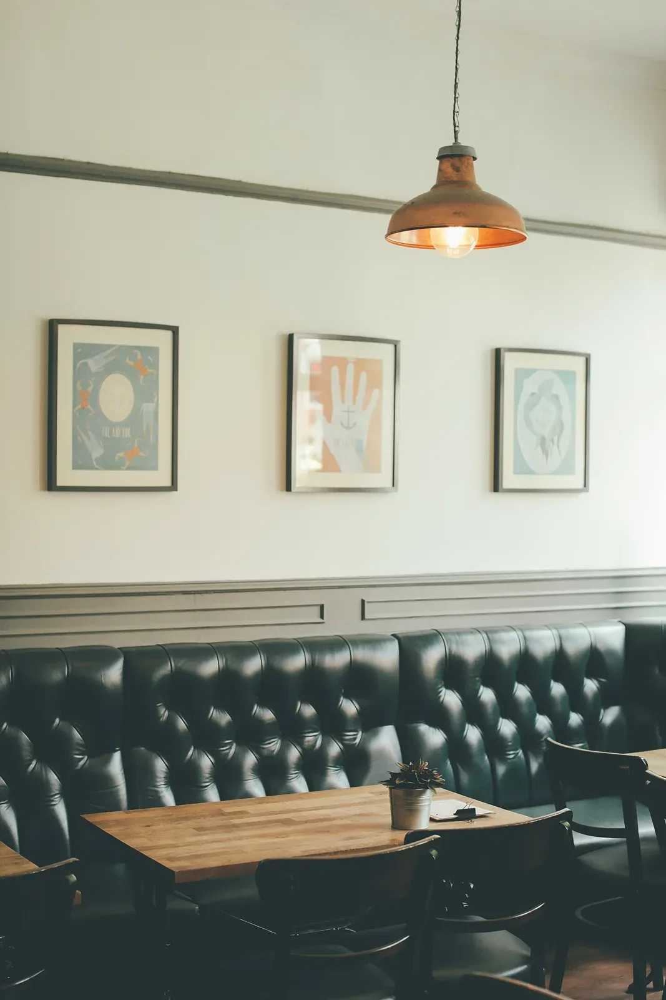
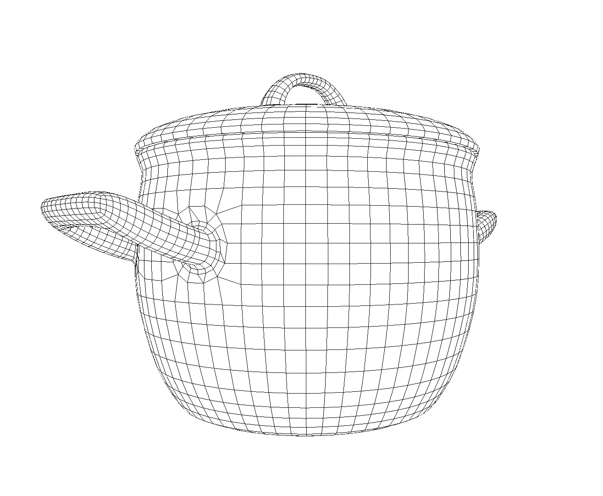
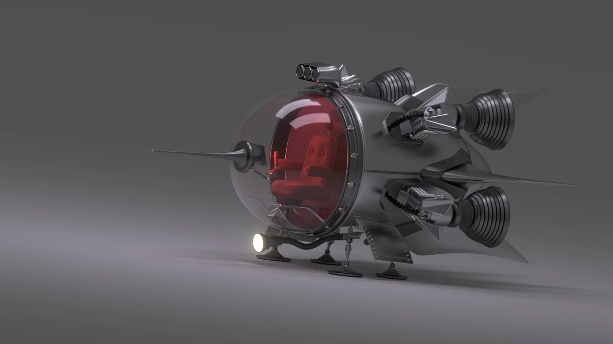

작업

카페 매장 시각화 공간 Unreal · 공사 전 완성 예상도
법랑 냄비 모델링 제품 Blender · 주방용품 브랜드 와이어프레임
우주선 콘셉트 렌더 콘셉트 Cinema 4D · 개인 작업 아파트 모델하우스 거실
공간
Unreal · 분양 상담용 이미지 6장
아파트 모델하우스 거실
공간
Unreal · 분양 상담용 이미지 6장
BlenderZBrushSubstance PainterCinema 4DUnreal EngineMarmoset Toolbag
추천하는 영상
PolygonIsland 채널의 「Product Rendering In Blender」. 제품 렌더의 조명과 카메라 잡는 법을 차례로 보여 줍니다.